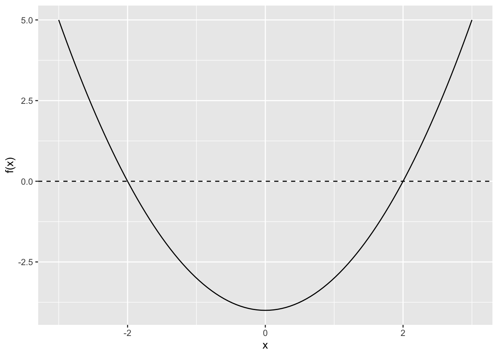
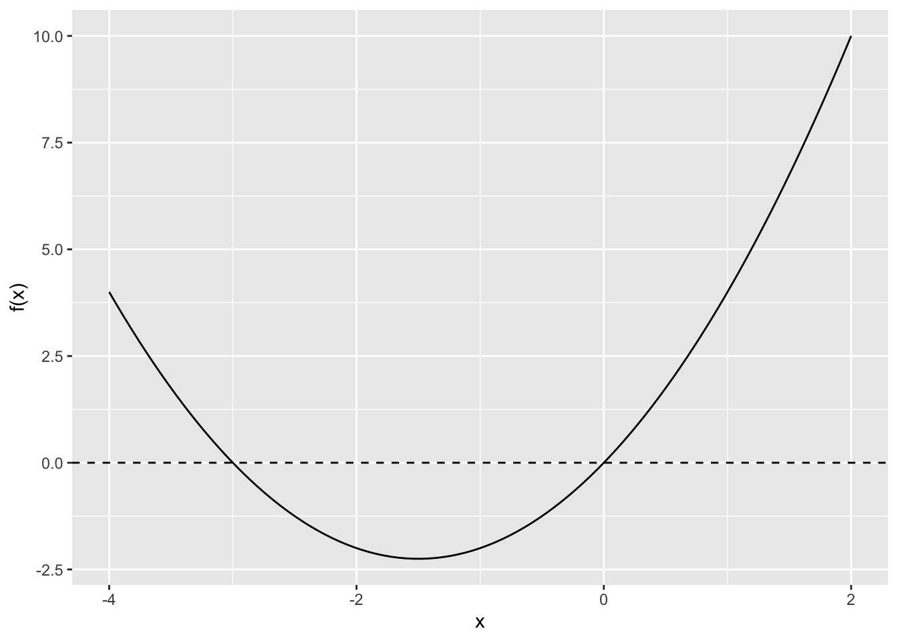

log(16)[1] 2.772589You can manipulate fractions with the identities below:
\(\dfrac{a}{c} + \dfrac{b}{c} = \dfrac{a + b}{c}\)
\(\dfrac{a}{c} - \dfrac{b}{c} = \dfrac{a - b}{c}\)
\(\dfrac{a}{b} \times \dfrac{c}{d} = \dfrac{a \times c}{b \times d}\)
\(\dfrac{\frac{a}{b}}{\frac{c}{d}} = \dfrac{a}{b} \times \dfrac{d}{c} = \dfrac{a \times d}{b \times c}\)
Potential Pitfalls
Example B.1 Compute \(\frac{1}{4} + \frac{3}{4}\).
Solution. The denominators match, so add the numerators to obtain \(\frac{1 + 3}{4} = \frac{4}{4} = 1\).
Example B.2 Compute \(\frac{2}{3} \times \frac{5}{7}\).
Solution. Multiply numerators and denominators to obtain \(\frac{2 \times 5}{3 \times 7} = \frac{10}{21}\).
Example B.3 Compute \(\dfrac{\frac{5}{6}}{\frac{2}{9}}\), which is the same as \({\frac{5}{6}} \div {\frac{2}{9}}\).
Solution. Multiply by the reciprocal to obtain \(\frac{5}{6} \times \frac{9}{2} = \frac{5 \times 9}{6 \times 2} = \frac{45}{12} = \frac{15}{4}\).
Example B.4 Simplify \(\frac{x}{3} + \frac{2x}{3}\).
Solution. The denominator matches, so add the numerators to obtain \(\frac{x + 2x}{3} = \frac{3x}{3} = x\).
Example B.5 Simplify \(\frac{\alpha}{\beta} \times \frac{\gamma}{\alpha}\).
Solution. Multiply across to obtain \(\frac{\alpha \times \gamma}{\beta \times \alpha}\). Cancel \(\alpha\) from numerator and denominator to obtain \(\frac{\gamma}{\beta}\).
Example B.6 Simplify \(\frac{y_1}{n} + \frac{y_2 + y_3}{n}\).
Solution. The denominator matches, so add the numerators to obtain \(\frac{y_1 + y_2 + y_3}{n}\).
Exponents and logarithms are inverse operations. If \(b^x = y\), then \(\log_b(y) = x\). In this course, we mostly use the natural logarithm, which uses base \(e \approx 2.718\). We denote the natural log as \(\log(x)\) (not as \(\ln(x)\)). In plots, we’ll sometimes use the base-10 exponents and logarithms \(10^x\) and \(\log_{10}(x)\).
You can manipulate exponents and logarithms with the identities below:
Example B.7 Evaluate \(\log(e^3)\).
Solution. \(\log(e^3) = 3 \log(e) = 3\).
Example B.8 Evaluate \(e^{\log(7)}\).
Solution. Since exponentiation and log are inverse operations, so \(e^{\log(7)} = 7\). In general, \(e^{\log(x)} = x\).
Example B.9 Simplify then evaluate \(\log(8) + \log(2)\).
Solution. \(\log(8 \times 2) = \log(16)\). Using R, \(\log(16) \approx 2.7726\).
log(16)[1] 2.772589Example B.10 Simplify \(\log(a^3b^2)\).
Solution. \(\log(a^3b^2) = \log(a^3) + \log(b^2) = 3\log(a) + 2\log(b)\)
Example B.11 Simplify \(\log\left(\dfrac{x^4}{y^2}\right)\).
Solution. \(\log\left(\dfrac{x^4}{y^2}\right) = \log(x^4) - \log(y^2) = 4\log(x) - 2\log(y)\)
Example B.12 Simplify \(\log\left(\prod_{i=1}^n y_i\right)\).
Solution. \(\log\left(\prod_{i=1}^n y_i\right) = \sum_{i=1}^n \log(y_i)\). This follows from the identity \(\log(ab) = \log(a) + \log(b)\). See the example below in R.
# example
y <- 1:5
log(prod(y))[1] 4.787492sum(log(y))[1] 4.787492To solve an equation, find all values of the variable(s) that make the equation true.
Example B.13 Solve \(\frac{x}{2} + 3 = 5\).
Solution. Subtract 3 from both sides to obtain \(\frac{x}{2} = 2\). Multiply both sides by 2 to obtain \(x = 4\).
Example B.14 Solve \(\frac{2y - 1}{3} = 3\).
Solution. Multiply both sides by 3 to obtain \(2y - 1 = 9\). Add 1 to obtain \(2y = 10\). Divide by 2 to obtain \(y = 5\).
Example B.15 Solve \(x^2 = 4\).
Solution. Take square roots to obtain \(x = \pm 2\). Notice that there are two solutions. The plot below shows that the curve \(x^2 - 4\) crosses the \(x\)-axis in two places (i.e., at \(x = \pm 2\), which are the solutions we found above).
# load packages
library(ggplot2)
# create function
f <- function(x) x^2 - 4
# plot the function to see the two solutions
ggplot() +
xlim(-3, 3) +
stat_function(fun = f) +
geom_hline(yintercept = 0, linetype = "dashed") +
labs(y = "f(x)",
x = "x")
Example B.16 Solve \(e^x = 7\).
Solution. Take natural logs to obtain \(x = \log(7)\). Using R, \(\log(y) \approx 1.9459\).
log(7)[1] 1.94591Example B.17 Solve \(\log(x) = 2\).
Solution. Exponentiate both sides to obtain \(x = e^2\). Using R, \(e^2 \approx 7.3891\).
exp(2)[1] 7.389056Example B.18 Solve \(2^x = 16\).
Solution. Recognize that \(2^4 = 16\), so \(x = 4\).
Alternatively, use logs to obtain
\[\begin{align} \log(2^x) &= \log(16) \\ x \log(2) &= \log(16) \\ x &= \frac{\log(16)}{\log(2)}. \end{align}\]
Using R, we can see that \(\frac{\log(16)}{\log(2)} = 4\).
log(16) / log(2)[1] 4You might have noticed that \(\log(16)/\log(2) = 4\) by recalling the change-of-base formula \(\log_b(a) = \frac{\log(a)}{\log(b)}\). In this case, we have \(\frac{\log(16)}{\log(2)} = \log_2(16)\) (i.e., “To what power must I raise 2 to get 16?”). Since \(2^4 = 16\), we have \(\log_2(16) = 4\). Thus \(\frac{\log(16)}{\log(2)} = 4\). If we had been clever, we wouldn’t have needed a calculator.
Example B.19 Solve \(\log\left(\frac{y}{3}\right) = 2\).
Solution. Exponentiate both sides to obtain \(\frac{y}{3} = e^2\). Multiply both sides by 3 to obtain \(y = 3e^2\). Use R to compute \(3e^2 \approx 22.167\).
3 * exp(2)[1] 22.16717Example B.20 Solve \(\log(x^2 + 1) = 3\).
Solution. Exponentiate both sides to obtain \(x^2 + 1 = e^3\). Subtract 1 from both sides to obtain \(x^2 = e^3 - 1\). Take the square root to obtain \(x = \pm \sqrt{e^3 - 1} \approx \pm 4.369\).
sqrt(exp(3) - 1)[1] 4.3687Example B.21 Solve \(3a + 2 = 5a - 4\).
Solution. Subtract \(3a\) from both sides to obtain \(2 = 2a - 4\). Add 4 to obtain \(6 = 2a\). Divide by 2 to obtain \(a = 3\).
Example B.22 Solve \(\alpha^2 + 3\alpha = 0\).
Solution. Factor the left-hand side to obtain \(\alpha(\alpha + 3) = 0\). Then it’s clear that \(\alpha = 0\) or \(\alpha = -3\). The plot below shows the two solutions.
# load packages
library(ggplot2)
# create function
f <- function(x) x^2 + 3*x
# plot the function to see the two solutions
ggplot() +
xlim(-4, 2) +
stat_function(fun = f) +
geom_hline(yintercept = 0, linetype = "dashed") +
labs(y = "f(x)",
x = "x")
Example B.23 Solve \(y_1 - 2y_2 = 4\) for \(y_1\) in terms of \(y_2\).
Solution. Add \(2y_2\) to both side to obtain \(y_1 = 4 + 2y_2\).